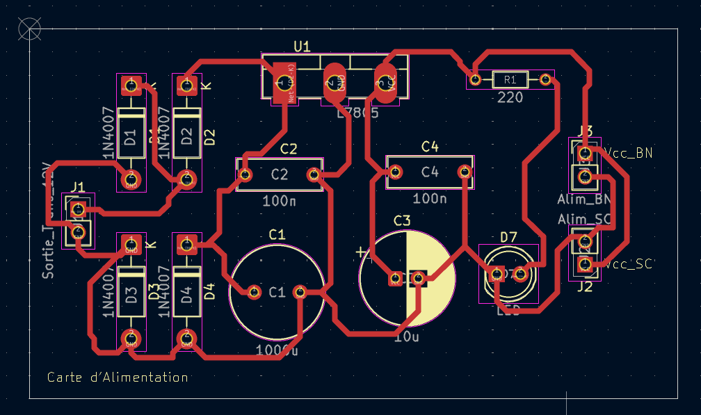
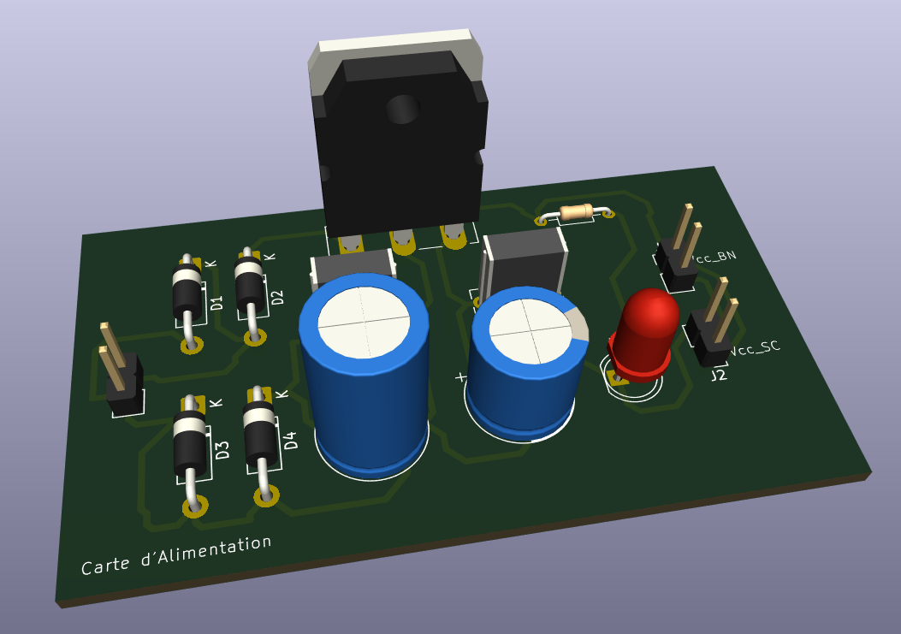
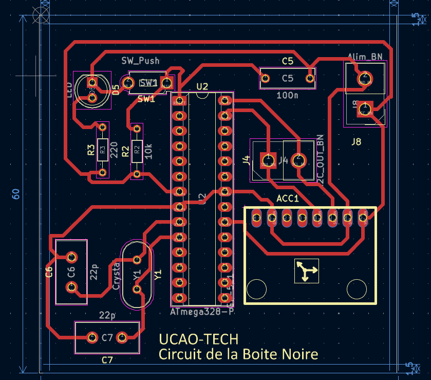
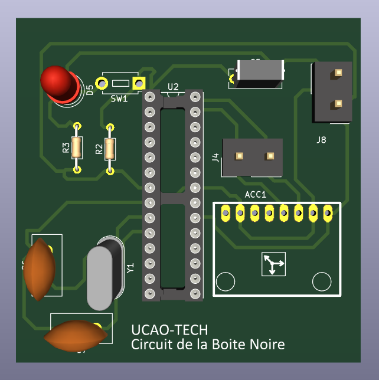
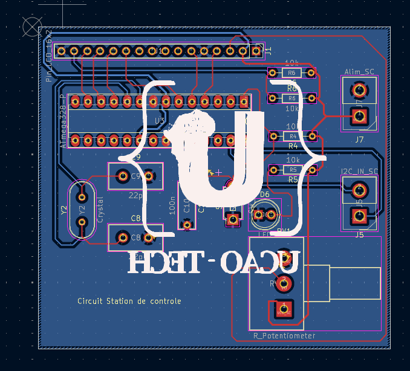
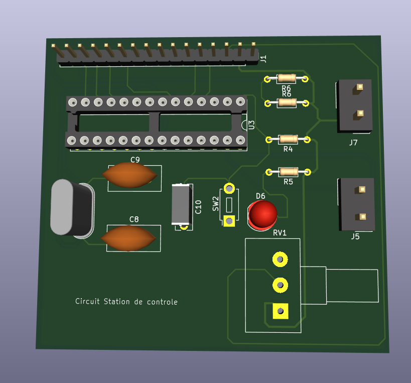
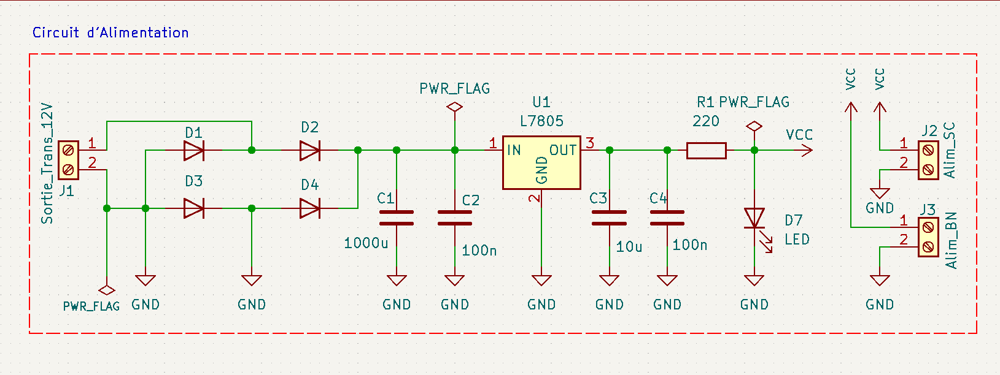
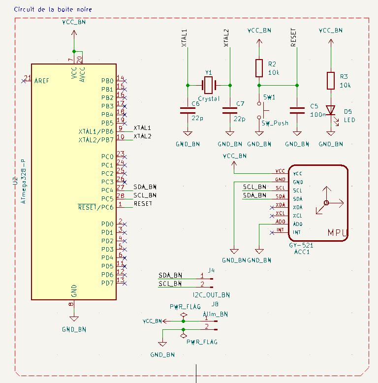
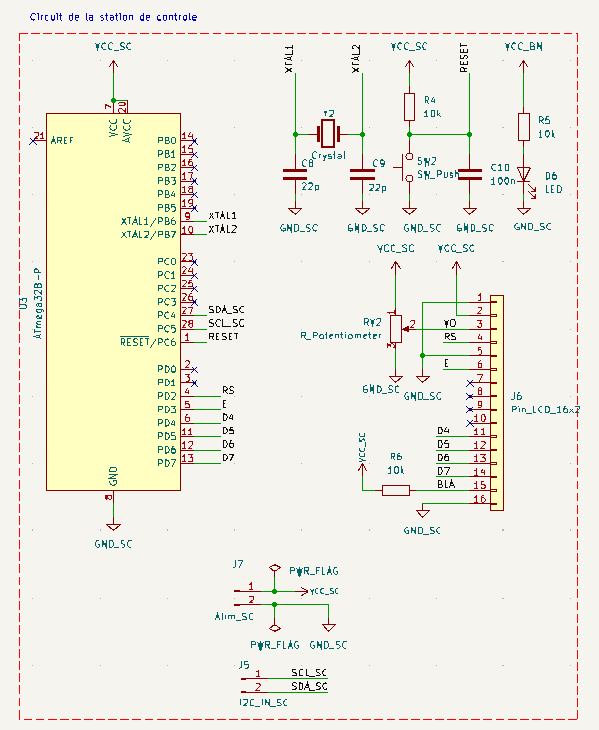

Test 2 : Boîte Noire - Communication et Contrôle
Durée : 1 semaine
Introduction
Dans les secteurs de l'aéronautique, de l'automobile ou du ferroviaire, les boîtes noires sont essentielles pour l'enregistrement des données de fonctionnement. Inspirés de ces systèmes, nous avons conçu un dispositif capable d'enregistrer et de transmettre en temps réel les données de mouvement d'un robot grâce à un capteur MPU6050 (accéléromètre + gyroscope) intégré dans une boîte cubique.
Objectifs du test
- Mettre en œuvre un système d'acquisition de données inertielle (MPU6050)
- Transmettre les données via un bus I2C vers une station de contrôle
- Afficher les données en temps réel sur un écran LCD
- Utiliser des microcontrôleurs ATmega328P sans carte Arduino
- Documenter la conception du circuit imprimé (PCB) et assurer une présentation professionnelle
Liste des composants utilisés
2 × ATmega328P
Cœur du système, ces microcontrôleurs 8-bit gèrent :
- La communication I2C entre modules
- Le traitement des données du capteur
- L'affichage sur l'écran LCD
Caractéristiques : 32KB Flash, 2KB SRAM, 16MHz

1 × Module MPU6050
Capteur 6 axes (gyroscope + accéléromètre) utilisé pour :
- Détection de l'orientation spatiale
- Mesure des mouvements brusques
- Référence à la gravité terrestre
Communication via I2C (adresse 0x68)
1 × Écran LCD 16x2
Interface de visualisation des données :
- Affiche les données en temps réel
- Contrôlé via interface I2C
- Adresse typique : 0x27 ou 0x3F
Consommation : ~1mA
1 × Régulateur de tension 5V
Stabilise l'alimentation électrique :
- Protège les composants sensibles
- Type : LM7805
Courant max : 1A (avec dissipateur)
Résistances, condensateurs, quartz 16MHz
Éléments essentiels au fonctionnement :
- Résistances 10kΩ et 220Ω
- Condensateurs de découplage (100nF)
- Quartz pour l'horloge du microcontrôleur
Précision requise : ±5%
Veroboard ou PCB
Support physique du circuit :
PCB personnalisé pour chaque module : alimentation, boîte noire et station de contrôle
Carte d'alimentation
 Carte de la boîte noire
 Carte de la station de contrôle
 Architecture du système
Le système est réparti en deux modules :
- Module capteur (la boîte noire) : contient l'ATmega328P maître I2C et le MPU6050
- Station de contrôle : contient l'ATmega328P esclave I2C et l'écran LCD
Schémas électroniques (réalisés sur KiCad)
Les circuits ont été conçus avec KiCad pour chaque sous-système du projet.
Schéma de l'alimentation
Schéma de la boîte noire
Schéma de la station de contrôle
Codes
Côté "boîte noire" (maître I2C, avec MPU6050
// MPU6050 + ATmega328P - Maître I2C
#include
#include "i2c_master.h"
#include "mpu6050.h"
void main(void) {
int16_t ax, ay, az, gx, gy, gz;
i2c_init(); // Initialisation I2C
mpu6050_init(); // Initialisation du MPU6050
while (1) {
mpu6050_read_accel(&ax, &ay, &az);
mpu6050_read_gyro(&gx, &gy, &gz);
i2c_start(0x10); // Esclave station de contrôle
i2c_write(ax >> 8); i2c_write(ax & 0xFF);
i2c_write(ay >> 8); i2c_write(ay & 0xFF);
i2c_write(az >> 8); i2c_write(az & 0xFF);
i2c_stop();
_delay_ms(500);
}
}
} Côté "station de contrôle" (esclave I2C + LCD 4 bits)
// ATmega328P - Esclave I2C + Afficheur LCD 4 bits
#include "i2c_slave.h"
#include "lcd.h"
volatile uint8_t buffer[6];
volatile uint8_t index = 0;
void receive_event(uint8_t data) {
buffer[index++] = data;
if (index >= 6) {
lcd_gotoxy(0, 0);
lcd_printf("Ax:%d", (buffer[0] << 8) | buffer[1]);
lcd_gotoxy(0, 1);
lcd_printf("Ay:%d", (buffer[2] << 8) | buffer[3]);
index = 0;
}
}
int main(void) {
lcd_init();
lcd_clear();
i2c_slave_init(0x10);
i2c_set_receive_callback(receive_event);
while (1) { /* boucle vide, tout est géré via interruptions */ }
}
Contraintes et recommandations
- Ne pas utiliser de carte Arduino ou breadboard dans la version finale
- Boîte cubique de 7 cm avec ouverture sur le dessus si opaque
- Câblage propre et composants fixés solidement
- Station de contrôle séparée avec écran bien lisible
Vidéo de démonstration
Critères d'évaluation
| Critère | Détails | Points |
|---|---|---|
| Circuiterie | Qualité du schéma, soudure, alimentation, présentation du circuit | 25 |
| Code | Lisibilité, commentaires, logique du code | 25 |
| Réalisation physique | Esthétique de la boîte et du poste de contrôle | 10 |
| Fonctionnement | Qualité de la démonstration du système | 25 |
| Documentation | Structure, clarté, rigueur technique | 10 |
| Présentation orale | Slides, expression orale, réponse aux questions | 5 |
Conclusion
Ce test a permis de mettre en œuvre un système embarqué capable de mesurer et transmettre des données inertielle en temps réel. Il s'inscrit dans une logique de fiabilité, de rigueur technique et d'intégration dans une solution robotique autonome.